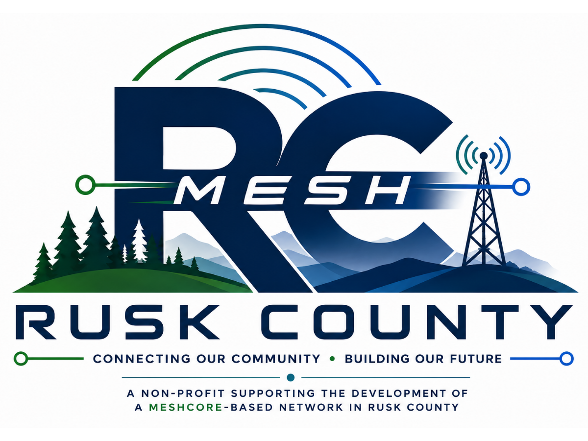
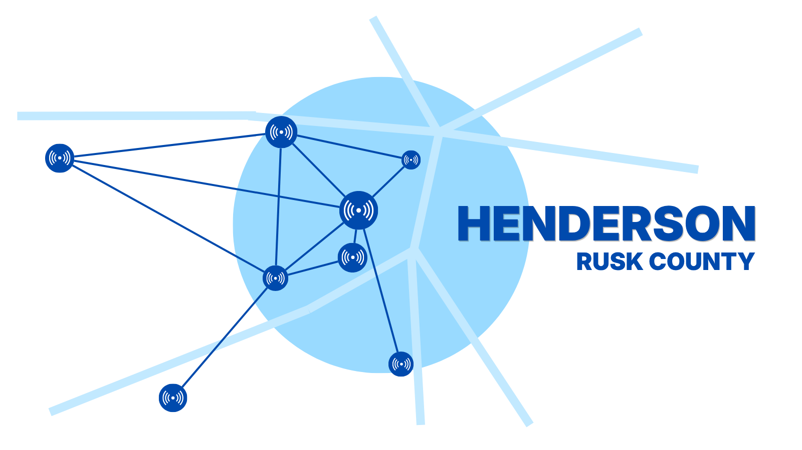

No Internet Required
Communicate directly across the mesh when traditional services are unavailable.

Community-built resilient communications
Rusk County Mesh is launching from Henderson, Texas first, with the goal of expanding node by node into the rest of the county over time.
A community-built network
Rusk County Mesh is a nonprofit community effort supporting the growth of a MeshCore-based communications network across the county. The network is starting in Henderson, then expanding outward as more nodes, hosts, and backbone sites come online. Strategically placed radios help people exchange messages without depending on cell service, Wi-Fi, or the Internet.
Learn more about joiningCommunicate directly across the mesh when traditional services are unavailable.
Every new node improves resilience, reach, and local ownership of the network.
Getting started can be surprisingly affordable, even for first-time users.
Explore the network
Henderson is the launch point. This section shows the network’s first footprint today, while leaving room for the rest of Rusk County to fill in as the mesh grows.
View launch nodes
Meet the network
The list below is generated from the same network data powering the map, making it easy to keep the site current as the mesh grows.
Getting started
You do not need an expensive tower or a complicated setup to take part. Most people can get on the air with a compatible device, a simple MeshCore install, and a nearby node.
Start with a MeshCore-compatible radio. No amateur license is required for typical participation.
Connect the device to your phone or computer and configure your identity.
Your device discovers nearby nodes and begins participating in the local network.
Frequently asked questions
MeshCore is software for compatible LoRa devices that allows short text communication across a decentralized mesh network.
No. The mesh is designed to pass messages locally between devices and backbone nodes without relying on cellular data or Wi-Fi.
Not for the basic device types typically used for MeshCore participation, though specific hardware choices should always be verified before deployment.
You can participate with a personal node, host equipment at an elevated location, help install hardware, or support infrastructure planning.
Help us build the network